釣行日誌 ＮＺ編
NZ 2018-19釣行 Vol - 1 前編 He-dayさん 特別寄稿
まえがき
みなさん、初めまして。このたび、伊藤様のウェブ・サイトを「間借り」してNZ釣行記を掲載していただくことになったHe-Day（NZのガイドさんによる、私のショート・ネームの発音）です。私自身のNZ初釣行前に、本ウェブ・サイトの「5000マイルを超えて」をずいぶん参考にさせていただいたこと、生年月日が近いこと、そして「元・ミッチェル408使い」であることなど、様々のご縁が重なって、「間借り」の機会をいただいた次第です。
私の釣行先は、NZ南島のイースト・コースト。伊藤様の釣行記と合わせて、NZ釣行を検討されている方々の参考になれば幸いです。
クライストチャーチ近郊の町に到着
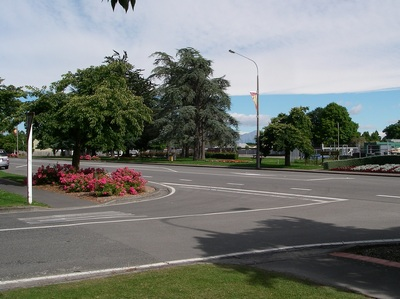
2018年12月下旬。オークランド国際空港の国際線ターミナルを出ると、まぶしい日差しと暑さをはらんだ強い風に包まれました。2個の大きなスーツ・ケースを載せたカートを押して、me-Youと一緒に国内線ターミナルへ向かって歩き出します。この10分間ほどの移動時間は、「NZへやって来た」という実感を深めてくれる、大好きな時間です。国内線ターミナルでの1時間足らずの待ち時間の後、いよいよ最終目的地へ向けて、クライストチャーチへの航空便が出発しました。
クライストチャーチ空港のピックアップ・エリアへ、シルヴァーのステーション・ワゴンで迎えに来てくれたのは、ガイドの奥さんのAdele。宿泊するモーテルのある近郊の町まで、1時間ほどのドライヴです。最近は雨が多く、どの川も増水で水位が高くなっているとのこと。「でも、私の夫のガイドなら大丈夫。」というAdeleの言葉に、少し安心させられたような気がしました。
モーテルへ到着すると、スーツ・ケースを部屋に入れ、スーパー・マーケットへ買い物に出かけます。この町に滞在中、昼食はガイドが用意してくれるサンドウィッチとスナック、夕食は外食となりますが、朝食は基本的に自炊です。あまり加熱調理をしなくても済むように、数種類のハムやスモークド・サーモン、袋詰めのサラダ用生野菜やトマト、トースト用ブレッド、バター、ヨーグルトなどを購入します。帰路は、モーテルまでゆっくり歩いて10分ほど。大した距離ではありませんが、かなりの量の食料や飲料の入った袋を両手に提げていると、長時間に及ぶ移動の疲れがじわじわと全身に染み出してくるように感じられました。
夕方になると、モーテルの近くのカフェ・レストランへ出かけました。前回の来訪時、エントランスに “FOR SALE” という看板が出ていましたが、やはりオーナーは変わっていました。でも、なじみのあるスタッフも少し残っていて、私たちの再訪を喜んでくれました。スタートのガーリック・ブレッドもメイン・ディッシュも、He-Dayとme-You二人で一人前をシェアするのにちょうどよい量。スモール・サイズのサラダだけは追加注文して、飾り過ぎていないシンプルな料理の味わいをゆっくりと楽しみました。翌日からは、毎朝午前4時起床、午前6時モーテル出発の日々が始まります。楽しみだけれど、少し不安。そんな気持ちを抱きながら、夜は早めに眠ることにしました。
Day 1
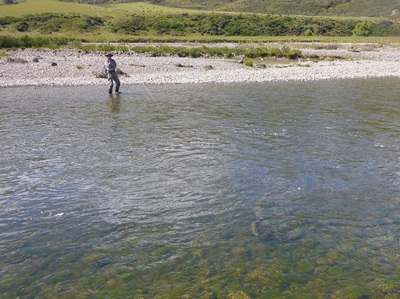
フィッシング･トリップ初日。私たちはウェイダーとウェイディング・ブーツ、フィッシング・ヴェストを身に着けてバック・パックを背負い、4ピース・ロッドを手にして、午前6時少し前にモーテルの駐車場へ出ました。ほどなく、メイン・ストリートからダーク・グレイのNISSAN X-TRAILが駐車場へ滑り込んできました。すぐにドアが開き、颯爽と歩み寄ってきたのは、フィッシング・ガイドのMartinです。挨拶を交わして久しぶりの再会を喜び合うと、目的地へ向かって出発しました。
「どこの川も水位が高くて状況は少々厳しいが、あくまでも “challenge” することが重要だ。大物を釣りたいだろう？」と、Martinは熱のこもった口調で問いかけてきます。私自身、やはり「大きな鱒を釣りたい」という思いは否定できません。鱒の数は少なくてリスキーな釣りになるけれど、うまく釣れれば大物の可能性が高い川。そういった川を中心に釣りを展開することが、私たちの「暗黙の了解」となりました。
1時間30分ほどのドライヴで、平原を流れる開けた川に到着しました。大川というわけではありませんが、川幅はかなり広く、どちらかと言えばプールよりも瀬が多い川です。この日は晴天に恵まれ、鱒を見つけて釣る「サイト・フィッシング」によさそうな状況でした。
ロッドは、二人とも9フィート・4ピース。9フィート・3Xリーダーをベースに多少長さを調整し、インディケーターを兼ねた大型のドライ・フライを結びます。タンやライト・ブラウンなどのナチュラル・カラーのシンセティック・マテリアルを使って、カディス・スタイルに巻いたフライです。シルエットの大きさに比較してフック自体はそれほど大きくはなく、ショート・シャンクの#14が中心。インディケーター・ドライのフック・ベンドに、3Xまたは4Xのティペットを結びます。ドロッパー・ニンフとして、He-Dayの6番ロッドにはかなり重めの#12、me-Youの5番ロッドには中程度の重さの#14ケースド・カディスを選択しました。
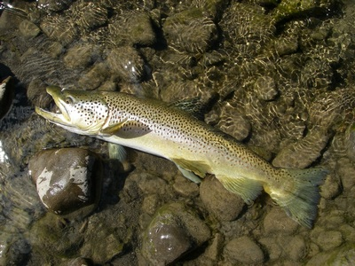
水は澄んでいて、激しく波立つ流心以外は瀬の底までよく見通せます。Martinは鱒が定位しそうなプールの流れ込みや瀬脇を丹念に観察しながら先に立って歩き、私たちも一生懸命川を覗き込みながら後を追いますが、なかなか鱒の姿は見つかりません。1時間30分近く川を遡った頃、ようやくMartinが私たちに掌を向けて「止まれ」という合図を送ってきました。川岸からさらに離れて、回り込むようなルートでMartinに接近します。MartinはHe-Dayのロッドを受け取り、ティップで対岸を指し示しました。流れの緩やかな浅い瀬に、緑色を帯びた大きな魚影が見えます。明るい日差しのおかげで川底に魚の黒い影ができ、魚の存在をより強く印象付けているようです。
He-Dayは川岸から離れて少し下流へ回り込み、慎重に川を渡って対岸の鱒の背後へ接近します。どこまで鱒に接近するかは、重要なポイントです。対岸で見守るMartinの合図を頼りに、じりじりと距離を詰めていきます。鱒の斜め下流10mほどの位置で足場をしっかりと確認し、キャスティングを開始。斜め下流から狙う場合、インディケーター・ドライが鱒の頭の上を流れると、ドロッパー・ニンフは鱒の向こう側の離れた場所を流れることになり、捕食する可能性がかなり低下してしまいます。そこで、ドロッパー・ニンフが鱒の鼻先を流れるように、インディケーター・ドライが少し手前側を流れるようにキャストする必要があります。ドロッパー・ニンフとインディケーター・ドライの距離感をつかむのはなかなか難しく、ニンフはうまくフィーディング・レーンに入っていない様子でした。
集中力が途切れないように努力しながら、キャスティングを繰り返すこと数回。鱒の近くを流れていたインディケーター・ドライがすっと沈みました。しっかりとロッドを立てて、フッキング。肘から肩まで、ドスンと重い衝撃が走ります。その次の瞬間、鱒は一気に上流へ向かって突っ走り始めました。慌ててロッドを高く掲げ、足場のよい川岸へ上がって鱒を追いかけます。一度落ち込みの段差を乗り越えて上流へ走った鱒は、その後反転し、流れに乗って下り始めました。He-Dayも、今度は鱒を追って下流へ急ぎます。流れに乗って下る鱒は、相当の重量感。腕がだるくなってきますが、幸いなのは長く続く瀬の中に障害物が見られないこと。無理さえしなければティペットを切られることはなさそうです。
10分近いやり取りの後、浅場へ引き寄せた鱒が横倒しになったところで、Martinがランディング・ネットに収めてくれました。威厳のある風貌と、薄い金色を帯びたシルヴァー・メタリックの体側。少し痩せ気味でしたが、風格を感じさせる、68cm、雄のブラウン・トラウトでした。
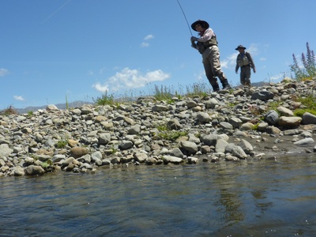
それから30分ほどたった頃、今度は私たちが歩いている岸寄りに定位している鱒をMartinが見つけました。今回はme-Youがそっと鱒の斜め下流へ忍び寄り、キャスティングを開始します。ところが、この鱒は同じ場所に長く定位せず、じっくりと狙わせてはくれません。me-YouはMartinのアドヴァイスを受けて少しずつ移動しながらキャスティングを繰り返しましたが、この鱒はフライを捕らえることなく姿を消してしまいました。
さらに1時間ほど遡行したところで、小さいけれど水深のあるプールに出ました。水面にはかなりの量の白泡や枯草の切れ端などが流れていて、水中を見通すことはできません。me-Youはプールの流れ込みへキャストし、ドロッパー・ティペットを長めにしたニンフがしっかりと沈むように、小さなメンディングを繰り返します。水面をゆっくりと流れていたインディケーター・ドライが、不意に沈みました。すかさずme-Youがロッドを立てると、ロッドは弧を描き、リーダーが水面に突き刺さりました。
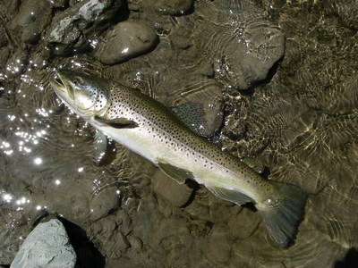
しばらくの間、プールの底へ潜り込もうとしてロッドを引き絞っていた鱒は、一気に反転して下流へ走り始めました。me-Youは懸命にロッドを立て、鱒を追いかけて歩きにくい丸石の川原を下っていきます。かなり長時間にわたるやり取りの末、鱒は岸近くの浅場に身を横たえました。この鱒も少し痩せ気味でしたが、全長はHe-Dayの鱒と同じ68cm。シルヴァー・メタリックの魚体が美しく輝く、雄のブラウン・トラウトでした。実は、me-Youのロッドは今回のフィッシング・トリップのために新調したもの。「ニュー・ロッドの最初の1尾が68cmか？ Unbelievable！」とMartinも大喜びで祝福してくれました。
その後も岸近くで定位する鱒を2尾見つけましたが、水温が上がり過ぎたせいか活性が低下していて、フライには全く反応しませんでした。ロング・ウォークの疲れはありましたが、二人とも目標の「大きな鱒」と出会えて、満たされた気分で帰途に就きました。
Day 2
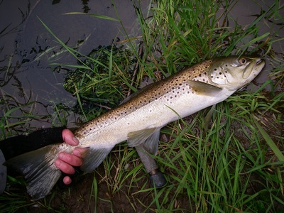
フィッシング･トリップ2日目は、曇天の下、2時間ほどのドライヴで、スプリング・クリークへ出かけました。流れの幅が2~3mほどの小さなクリークですが、大きな鱒と出会える可能性はかなり高いということです。ただ、川岸は両岸とも背の高い草が生い茂るバンクになっていて、キャスティングをする際は、背後の草にずいぶん気を使わされます。Martinは「この川では、インディケーター・ドライに反応が出ないことも多い。鱒がフライを食った素振りを見せたり、『ストライク！』と声をかけたりした時は、積極的に合わせろ。」と言うのですが、合わせが空振りに終わった場合は、ラインを前方へ打ち返す間もなく背後の草に絡まってしまうのです。
この日のドロッパー・ティペットは、50cmほどと短め。ニンフは、前日と同じケースド・カディスです。ゆっくりとバンクを歩きながら鱒の姿を探して、鼻先から30cmほど上流にインディケーター・ドライが落ち、ニンフはティペットが前方へ伸びた状態で着水するようにキャストします。
まず、He-Dayの#12ケースド・カディスを捕らえたのは、58cmの雄。なぜかあまり暴れず、おとなしくMartinのランディング・ネットに収まりました。その後、me-Youも同サイズの雌をキャッチしたのですが、足場が悪いため、写真を撮る準備に手間取っているうちにネットから逃げ出してしまいました。
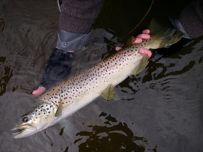
その次の鱒は、対岸近くにできたバブル・ラインの中に定位して、時折、水中で捕食行動を見せていました。He-Dayが下流へ回り込んで、そうっと水中へ入り、ゆっくりと鱒の背後へ近づきます。10m足らずの距離から、慎重にキャスト。2投目で、バブル・ラインを流れるインディケーター・ドライが沈みました。
ロッドを立てて合わせると、鱒はいきなり上流へ突っ走りました。リールから激しい金属音が響き、あっという間にバッキング・ラインが見えるところまでフライ・ラインを引き出されてしまいます。ようやく鱒の「ジェット・ラン」が止まったところでリールを巻き始めましたが、アンダーカット・バンクの障害物の間を走り抜けたらしく、何かに引っ掛かってリールが巻けなくなることもしばしば。諦め半分でロッドを立てたり寝かしたり、時にはティペットの強度だけを頼りにラインを引っ張ったりしながら巻いているうちに、ようやく鱒の姿が見えてきました。#14ケースド・カディスを捕らえた「ジェット・ラン・フィッシュ」は、64cmの雄。青味がかったメタリック・カラーの頭部と、筋肉質な体型が印象的でした。
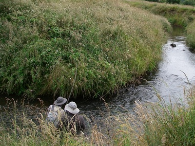
それから30分くらいたった頃、今度はme-Youが45cmクラスの鱒をキャッチ。全身が銀色に輝き、背が盛り上がって頭部が小さい魚体を見ると、シー・ラン・ブラウン・トラウトではないかと思わされます。ただ、Martinはこのサイズなら写真を撮るまでもないだろうと、「ナイス・フィッシュ！」と声をかけて、早々にリリースしてしまいました。
昼近くになって、クリークが大きく曲がっている場所に出ました。曲がった流れの外側のバンク際、水深がわずか20cmほどしかないような場所に、大きな鱒の姿が見えます。生い茂った草が被さってきていてキャストしにくい場所ですが、鱒はかなり速い流れの中に入っているため、だいぶ接近しても大丈夫な様子です。He-Dayがトップ・ガイドから出したフライ・ラインの長さは30cmほど。ほとんどリーダー・キャストのような感覚で、鱒の少し上流へインディケーター・ドライとニンフを放り込みます。
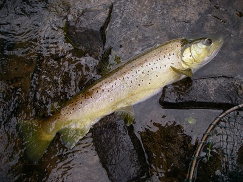
数投目に、インディケーター・ドライが水中に消えました。信じられない思いでロッドを立てると、ドスンと肩まで響く衝撃が走りました。曲がり角近くの深みへ走り込もうとしたり、アンダーカット・バンクの草/の茎や根にリーダーを巻きつけようとしたりする鱒と、ロッド・ティップだけに負荷がかかり過ぎないように、トラブルを起こしそうな場所へ走られないように、気を使いながらのやり取りが続きます。
#14ケースド・カディスをくわえてようやくMartinのネットの収まったのは、金色の輝きと赤い斑点が美しい、66cmの雌でした。二人とも十分に楽しんだということで、この日の釣りはここで切り上げ、少し早めに帰途に就くことにしました。
Day 3
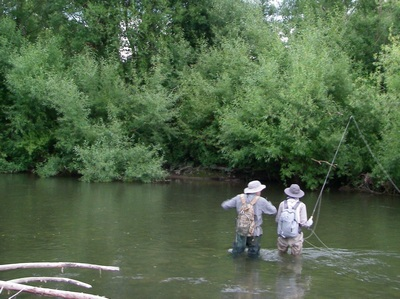
フィッシング･トリップ3日目は、強風が吹き荒れる１日となりました。山地には強風警報が出ているということで、近場の川へ出かけることにしました。両岸が河畔林に囲まれたエリアで、川岸に立つと少し風が穏やかになったように感じられます。それでも状況は厳しいようで、Martinも「今日は、“Every fish is good fish.” 釣れればラッキーだ。」と言います。
この川の河畔林はヤナギが多く、葉に寄生して成長する“willow grub”を捕食する鱒が多いということでした。そこで、ボディをウイロウ・グラブ風に巻いた#14ドライ・フライをインディケーターに、ドロッパー・ニンフとして#16ウイロウ・グラブ・パターンを結びます。
午前7時頃、増水で水につかったヤナギの枝の下流で、ライズが始まりました。Martinと一緒にゆっくりと接近し、He-Dayがキャスト。2・3投目で水面が小さく割れ、鱒がインディケーター・ドライを捕らえました。
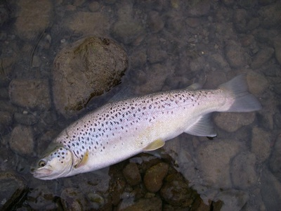
立ち込んだ場所は底石が滑りやすく、流れがかなり速いため、その場所でランディングすることはできません。滑って転ばないように、慎重に川を少し下ります。ロッドを立てたり寝かしたりして、流木が積み重なっている場所をかわしたら、川原へ上がって鱒を浅場へ引き寄せます。
今回のフィッシング・トリップで、初めてドライ・フライに出た鱒は、48cmのブラウン・トラウト。頭部が小さく、厚みのある体躯は、紫色を帯びた銀色に輝いていました。
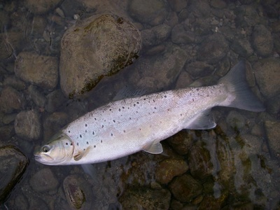
続いて、1尾目の鱒より少し上流で、me-Youの#16ウイロウ・グラブ・パターンを捕らえたのは、45cmのブラウン・トラウトでした。うっすらと青紫色を浮かべたシルヴァー・メタリックの輝きがまぶしく、斑点の少ない美しい魚体。この鱒も、もしかしたら海へ下りるのだろうかと考えながら、しばし見惚れてしまいました。
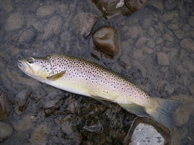
また同じ辺りにウェイディングし、ライズを探しながら少しずつ前進します。かなり上流のヤナギの枝の下流で、ライズが連続しているのを発見しました。水深はHe-Dayがウェイディングできる限界に近く、ある程度のロング・キャストを強いられます。風にも影響され、リーチ・キャストとメンディングを駆使しても、フィーディング・レーンにフライをドラグ・フリーで流すのは難しい状況でした。Martinの “You can do it！” という声に励まされてキャスティングを繰り返すうちに、ようやくイメージ通りにフライがフィーディング・レーンを流れました。
一瞬の後、流れの筋の中から鱒が頭を出して、ドライ・フライを捕らえました。この日一番の強烈な疾走をいなしながら、またゆっくりと川を下り、前回と同じ場所で鱒を引き寄せます。午前7時40分にランディングした鱒は、体高のある58cmの雄。Martinも、「今日の状況では、この鱒は間違いなく “big fish” だ！」と、興奮気味でした。
その後、水位が高く重い流れを苦労して遡行しましたが、得られたチャンスは1回だけ。流木に囲まれた小さな深みで大きな鱒がドライ・フライに反応したのですが、寸前のところでドラグがかかってしまい、フライを捕らえさせることはできませんでした。強風と遡行の厳しさに気力を削がれ、この日も早めに釣りを終えることにしましたが、朝の「三連発」の鱒たちのおかげで、救われたような気分でした。
釣行日誌ＮＺ編 目次へ
サイトマップ
ホームへ
お問い合わせ